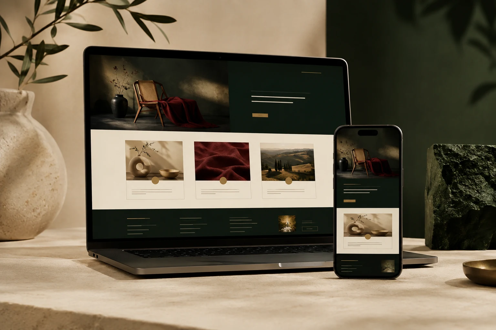
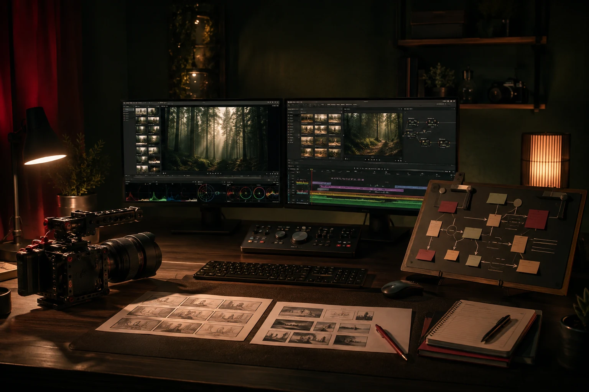
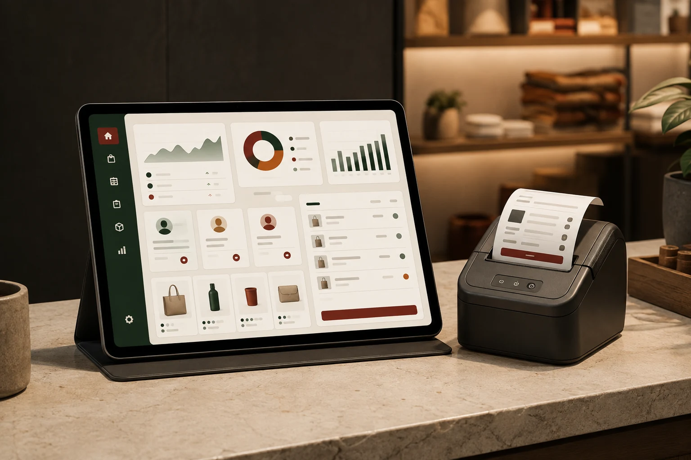
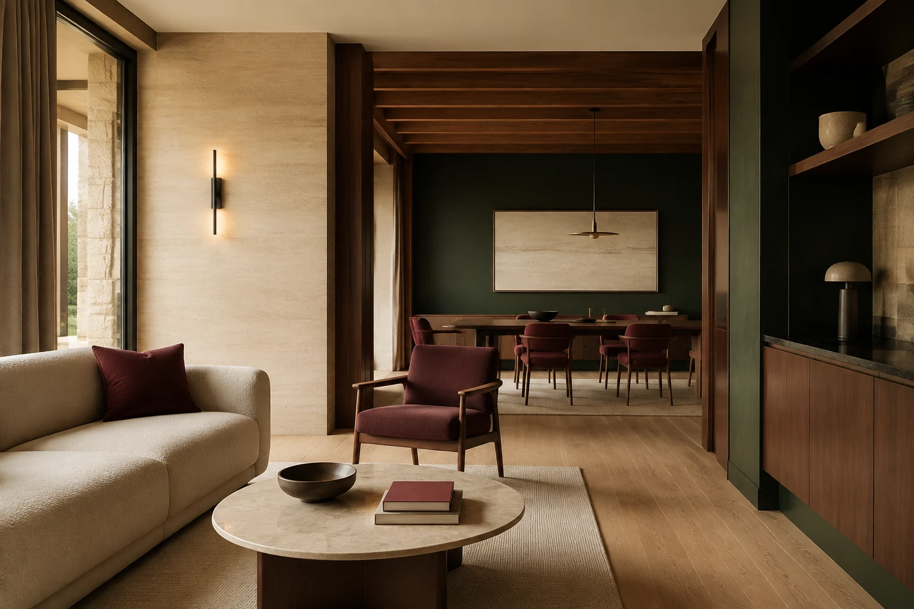
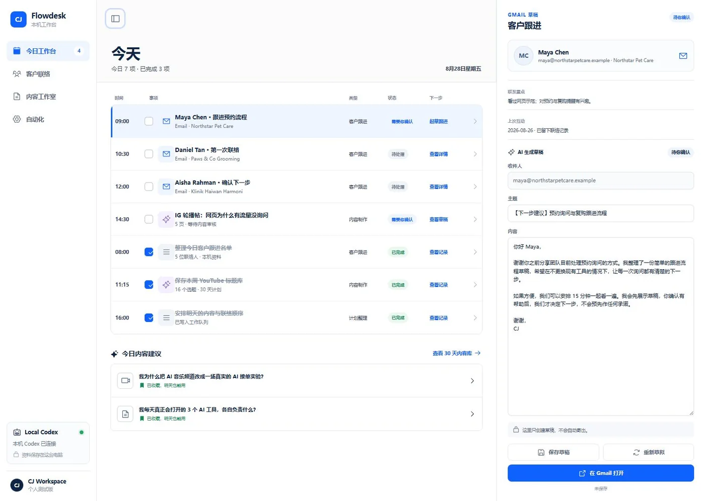

Malaysia · Design · Content · Digital Systems
CJ CHAN
Designer · Builder · Creative Partner 设计师 · 实用系统开发者 · 创意伙伴
Digital experiences with clarity and impact.
把创意做清楚，把数字体验做得真正有用。
Services
Four ways I can
help you build better.
四种方式，
把你的想法做得更好。
Choose a service to see the problems it solves, the work involved and the next step.
选择一项服务，查看它解决什么问题、包含什么工作，以及下一步怎样开始。

Web Design
Purposeful websites that communicate clearly and guide visitors toward action.
把服务讲清楚，并引导访客采取行动的网站。
Explore Service →查看网页设计服务 →
AI Video
Strategy-led video concepts for ads, explanations and faster content testing.
为广告、讲解和内容测试制作策略先行的 AI 视频。
Explore Service →查看 AI 视频服务 →
Small App
Focused tools for sales, customer follow-up and everyday operations.
帮助销售、客户跟进和日常营运的实用小工具。
Explore Service →查看 Small App 服务 →
Selected Interior Projects
Considered spaces planned around how people actually live and work.
从实际生活与工作方式出发，规划合适的空间。
Explore Service →查看室内设计服务 →Selected work
Work that solves
real problems.
作品不只好看，
也要解决问题。
Every item is labelled by its real delivery state.
每个项目都清楚标明目前的真实状态。

About CJ
Designer by craft.
Builder at heart.
用设计思考，
用实用成果交付。
I combine design, content and practical systems to turn complex ideas into clear experiences people can understand and use.
我把设计、内容和实用系统结合起来，把复杂想法变成容易理解、真正能使用的体验。
Discover
Understand the goals, audience and context.
了解目标、受众与真实情况。
Define
Choose a clear direction and useful scope.
确定方向和真正需要的范围。
Create
Design, build and make the idea tangible.
设计、制作，把想法变成成品。
Deliver
Test, refine and hand over clearly.
测试、优化，并清楚完成交接。